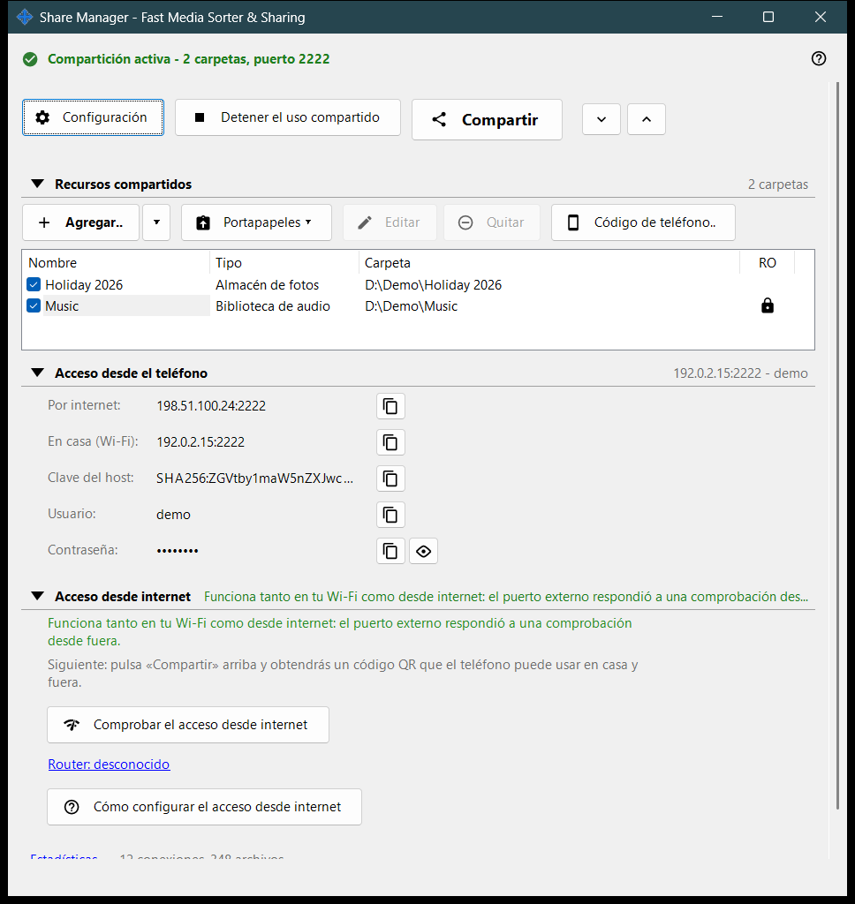
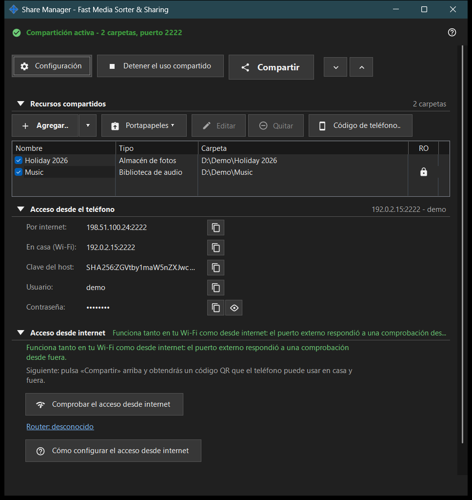

Share Manager - Fast Media Sorter & Sharing
Para qué sirve
La ventana principal de Share Manager: el servicio local de uso compartido que también ejecuta las operaciones de archivos programadas. Muestra las carpetas que este PC comparte con un teléfono por SFTP, inicia y detiene el uso compartido, entrega el código de acceso e indica cómo puede llegar el teléfono al PC. Las operaciones de archivos programadas funcionan también sin compartir carpetas: tienen su propia ventana, que se abre desde el menú del icono de la bandeja o desde el menú de carpeta del visor; su página y la de la cuenta de intercambio están además en los ajustes del gestor. Se abre desde el visor o desde el icono de la bandeja; al cerrar la ventana la aplicación sigue en la bandeja.


En este orden
- Pulsa «Agregar..» y elige «Carpeta..» para poner una carpeta en la lista.
- Marca la carpeta: solo se sirven las carpetas marcadas.
- Pulsa «Iniciar el uso compartido» (hace falta al menos una carpeta marcada).
- Pulsa «Compartir» para obtener el código QR o el archivo .fmscfg para el teléfono.
- Para acceder desde fuera de tu red doméstica abre el grupo «Acceso desde internet» y usa sus dos botones.
- Pulsa «Detener el uso compartido» cuando hayas terminado.
Los elementos
Fila superior
«Configuración» abre los ajustes del gestor. «Iniciar el uso compartido» se convierte en «Detener el uso compartido» mientras el servidor está en marcha. «Compartir» abre el asistente del código de acceso y solo funciona mientras el uso compartido está activado; si no, la sugerencia indica que primero hay que iniciar el servidor. «Expandir todo» y «Contraer todo» abren o cierran los grupos de debajo.
Recursos compartidos
Una fila por recurso, con una casilla y las columnas Nombre, Tipo y Carpeta. Una fila marcada se sirve a los teléfonos; una lista vacía muestra «Añade tu primer recurso..». Si desmarcas la última carpeta marcada, la ventana pregunta si detener el uso compartido, porque los teléfonos conectados se desconectan. Iniciar el uso compartido sin ninguna carpeta marcada solo muestra la sugerencia «Primero añade una carpeta y márcala.»
Acceso del teléfono
Los datos de conexión que necesita un teléfono o cualquier cliente SFTP: la dirección por internet y en casa (Wi-Fi), IPv6, la clave del host, el usuario y la contraseña. «Mostrar la contraseña» la revela y «Ocultar la contraseña» la vuelve a ocultar. El texto bajo el grupo explica si el teléfono llega al PC solo en casa o también desde fuera.
Acceso desde internet
«Comprobar el acceso desde internet» abre la ventana de la prueba de acceso desde internet. «Cómo configurar el acceso desde internet» abre la guía del router. El enlace «Router: ..» abre la página propia del router; si no se encontró ninguno, dice «Router: desconocido». El grupo incluye una advertencia: cualquiera que conozca la dirección, el usuario y la contraseña puede llegar a todas las carpetas compartidas, así que no publiques el código QR ni el archivo .fmscfg y desactiva el uso compartido cuando termines.
Estadísticas
Bajo los grupos hay un enlace «Estadísticas» junto a un breve resumen como «N conexiones, M archivos». El enlace abre la ventana Estado del uso compartido con los contadores completos.
Cuando las funciones de servidor están desactivadas
Mientras el componente de servidor no esté activado, la ventana muestra «Las funciones de servidor están desactivadas» y el botón «Activar las funciones de servidor..», que abre la ventana «Activar el uso compartido de carpetas». Si falta el componente de uso compartido en la instalación, la ventana lo indica y pide reinstalar la aplicación.
Ajustes del gestor · Ajustes de uso compartido SFTP · Ajustes del servidor de intercambio